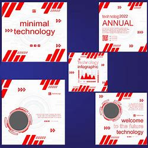

前端开发趋势分析
探讨2024年前端技术发展方向，包括框架选择、性能优化等方面。
阅读更多 →

JavaScript异步编程详解
深入理解Promise、async/await等异步编程模式，提升代码质量。
阅读更多 →

CSS Grid布局实战
通过实际案例学习CSS Grid布局，打造现代化的页面布局。
阅读更多 →

Node.js性能优化技巧
提升Node.js应用性能的实用技巧，包括内存管理、缓存策略等。
阅读更多 →

React状态管理最佳实践
比较Redux、Context API等状态管理方案，选择最适合的方案。
阅读更多 →

TypeScript高级类型应用
探讨TypeScript中的高级类型，如条件类型、映射类型等，提升代码质量。
阅读更多 →